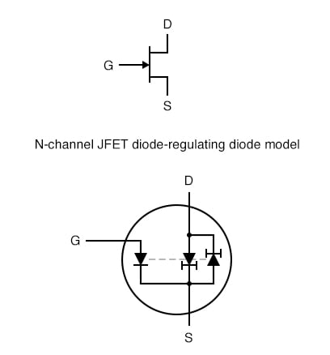
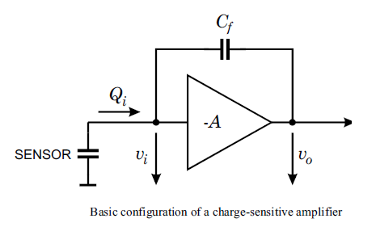
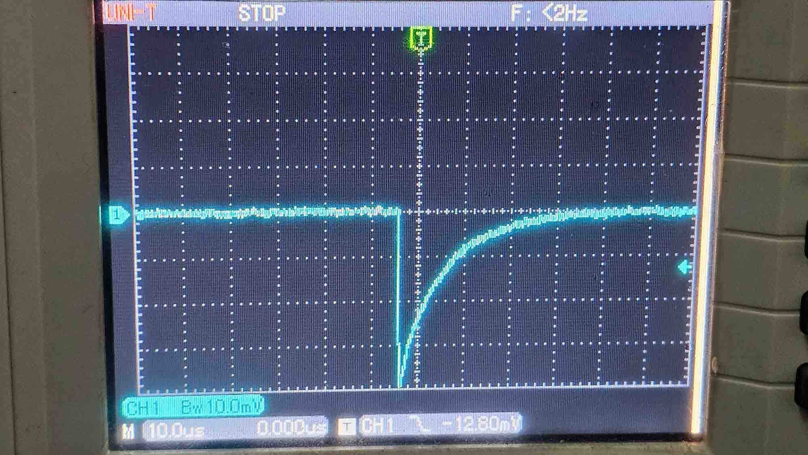
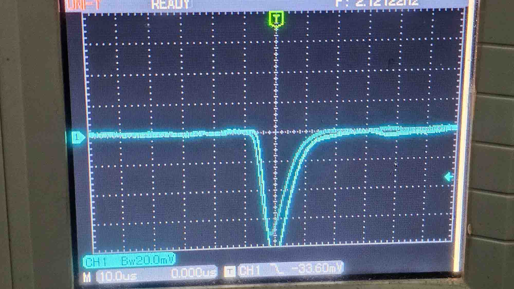
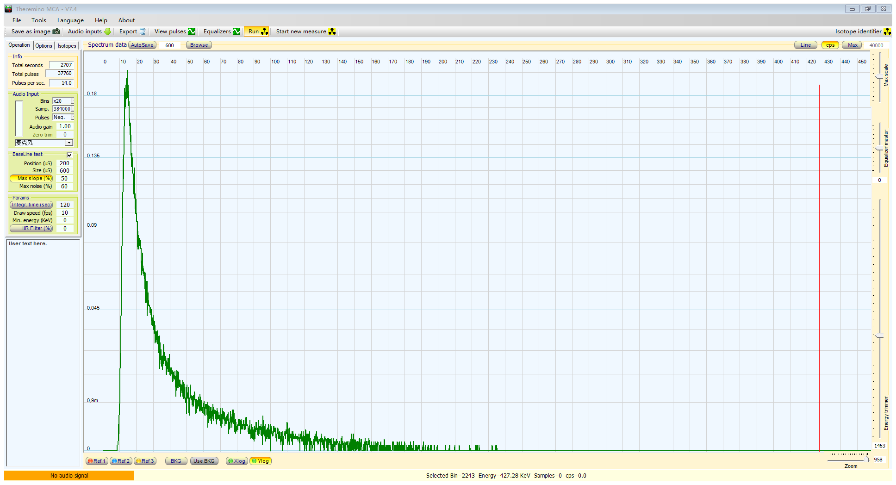

文章与笔记/实验与记录
使用JFET作为探测器
1. 引言
在传统半导体辐射探测系统中，探测器与前置放大器通常是两个相互独立的部分。
例如，在硅 PIN 光电二极管探测器中，辐射在硅材料内部产生电子-空穴对，探测器收集这些电荷并形成微弱电流信号，随后由电荷灵敏前置放大器（CSA）将其转换为电压脉冲。
而在这类电路中，JFET（结型场效应晶体管）经常被用作前置放大器的输入级。
它具有较高的输入阻抗和较低的噪声，适合处理探测器产生的微弱电荷信号。
但一个值得思考的问题是：
如果 JFET 本身也能够对电离辐射产生响应，那么它是否既可以作为前置放大器，又可以作为辐射探测器？
这并非完全没有理论依据。JFET 内部包含半导体 PN 结、耗尽区以及具有电场分布的导电沟道，以下展示了JFET的电路图。当电离辐射与其半导体结构发生相互作用时，可能产生额外的载流子，并改变器件内部的电荷分布和电流状态。

因此，JFET 不仅可能是信号放大元件，也可能成为辐射信号的产生元件。2. JFET 对电离辐射产生响应的物理基础
以 N 沟道 JFET 为例，其基本结构由 N 型半导体沟道和两侧的 P 型栅极区域构成。
栅极与沟道之间形成 PN 结。当栅极相对于源极施加反向偏置时，PN 结附近形成耗尽区，耗尽区的宽度随反向偏置变化。
当 X 射线、γ 射线或带电粒子进入硅材料时，可以通过光电效应、康普顿散射或直接电离等过程向材料沉积能量，并产生电子-空穴对。
在硅中，产生一个电子-空穴对平均需要约 3.6 eV 的能量。这些载流子穿过栅极与沟道之间的反偏耗尽层时，电子-空穴对在电场作用下，电荷被收集并积累在沟道附近的势阱（类似“内部栅极”的效应）中。
这些累积的电荷会改变等效栅压，进而调制漏源电流 。 信号不需要先跑过外部走线再去敲放大器的门，而是直接在晶体管内部转化成了电流变化。
3. 初步实验观察
在一次半导体辐射探测器实验中，原本使用的硅探测器被拆除，但电路仍然能够观察到辐射计数。
为了排除其他可能的信号来源，我尝试使用两根彼此靠近的铜线构成简单的气体电离结构，其中一根连接 JFET 栅极，另一根连接 +12 V 电源。
然而，该结构没有产生可识别的脉冲。
随后，将放射源直接靠近 JFET 本体，电路重新出现了可识别的计数信号。
JFET 直接探测辐射与 PIN 光电二极管探测辐射存在一些相似之处，但两者的设计目标不同。
| 特性 | PIN 光电二极管 | 普通 JFET |
|---|---|---|
| 主要用途 | 光电及辐射探测 | 信号放大 |
| 敏感结构 | PN 结耗尽区 | 栅极 PN 结及沟道 |
| 电荷收集 | 专门优化 | 未针对辐射优化 |
| 器件结构 | 可设计较大耗尽体积 | 受晶体管结构限制 |
| 辐射响应 | 已有成熟应用 | 仍需进一步研究 |
JFET产生的信号因为M=1，所以幅度非常低，因此需要进行适当的放大。鉴于信号电平极低，必须使用低噪声放大器，信号前置放大器基于电荷敏感前置放大器（CSA）。
下图展示了电荷前置放大器的基本原理图：

脉冲
以下是CSA和整形放大器的输出。测量的均为Sr-90源，γ射线的穿透力较强，几乎很难看见正确的脉冲。


多通道分析仪
硬件部分完成后，整形器产生的脉冲信号通过USB声卡由MCA Theremino软件采集。
谱图如下:

4. 结语
JFET 在辐射探测领域通常被视为前置放大器的输入器件，而不是探测器本身。
但从半导体物理原理来看，JFET 内部的 PN 结、耗尽区和导电沟道同样可能与电离辐射发生相互作用，并产生能够被外部电路读取的电学信号。
当然，用现成商用 JFET 直接测辐射更像是一次高敏感度、强指向性的“趣味验证”：受限于微小的灵敏体积、浅薄的耗尽层，以及偏置与电荷复位的现实约束，它很难替代专业探测器做高效率测量。
但它提供了一个值得探索的方向：是否可以不增加独立的辐射敏感元件，而直接利用晶体管本身的半导体结构实现辐射探测？
有时候，原本用于读取探测器信号的器件，本身也可能就是一个探测器。